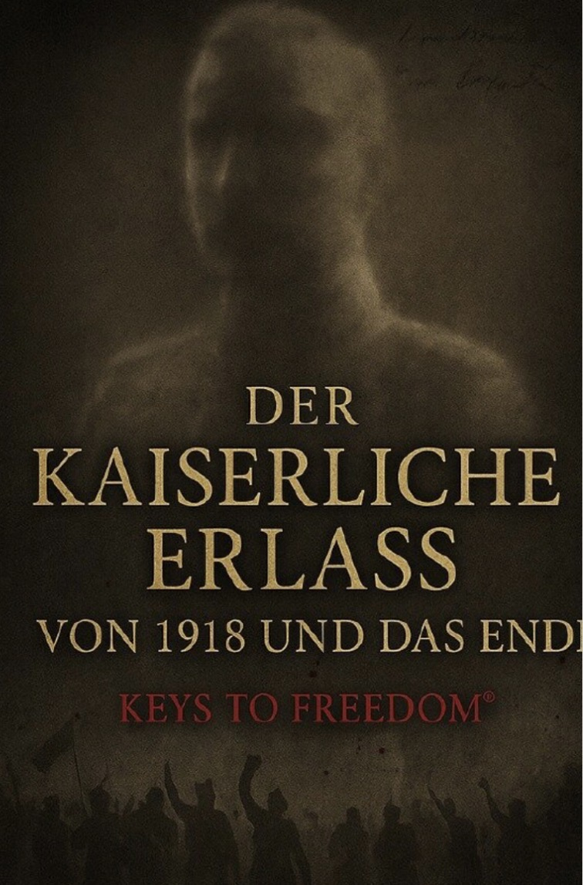
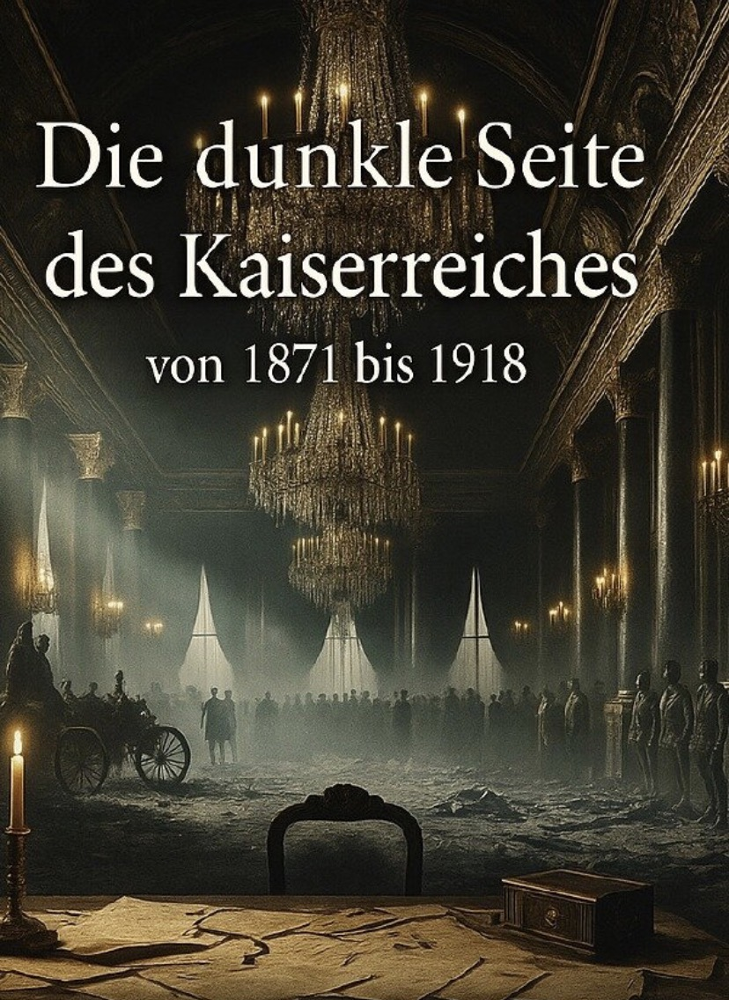

Bücher

Der Kaiserliche Erlass von 1918 und das Ende
Eine fundierte Analyse der letzten Tage des Kaiserreichs und der politischen Umwälzungen 1918.

Die dunkle Seite des Kaiserreichs
Ein Blick auf die weniger bekannten und düsteren Aspekte des Kaiserreichs, politisch und gesellschaftlich.

Eisen, Blut und Schweigen
Historische Ereignisse und Entwicklungen, die das Kaiserreich geprägt und verändert haben.
Blut und Krone
Ein detaillierter Blick auf die Machtstrukturen, Intrigen und Schicksale innerhalb des Kaiserreichs.